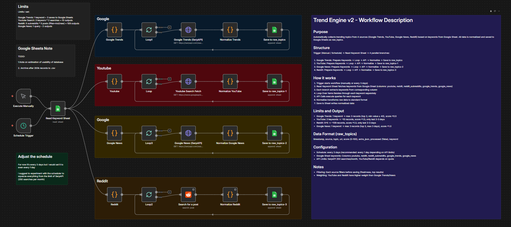
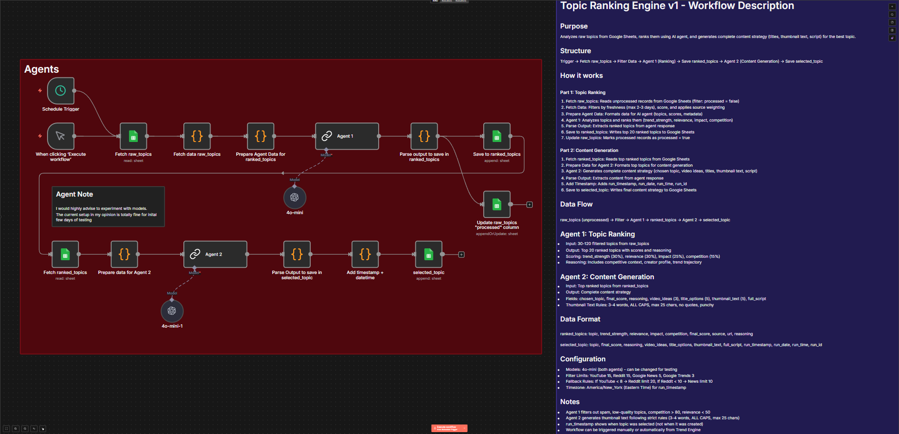

Goose Production – pipeline treści
System n8n do zbierania trendów, rankingu tematów i generowania strategii treści pod wideo
Przegląd projektu
O projekcie
Projekt to pipeline do produkcji treści wideo: dwa workflowy n8n. Pierwszy (Trend Engine v2) zbiera i normalizuje trendy z Google Trends, YouTube, Google News i Reddita na podstawie słów kluczowych z Google Sheets. Drugi (Topic Ranking Engine v1) pobiera surowe tematy, rankuje je przez agenta AI i generuje gotową strategię treści (tytuły, tekst miniaturki, skrypt) dla najlepszego tematu.
Dane płyną przez arkusze: raw_topics → ranked_topics → selected_topic. Wyzwalacze: harmonogram (np. co 3 dni) lub ręcznie. Modele AI (np. 4o-mini) można wymieniać pod kątem jakości i kosztów.
Trend Engine v2
Odczytuje słowa kluczowe z Google Sheets i uruchamia cztery równoległe gałęzie (Google Trends, YouTube, Google News, Reddit). Każda gałąź iteruje po słowach, wywołuje odpowiednie API (SerpAPI, YouTube Search), normalizuje wyniki do wspólnego formatu i dopisuje rekordy do arkusza raw_topics (timestamp, source, topic, url, score 0–100, processed=false). Wyzwalacz: ręczny lub harmonogram (np. co 3 dni). Limity: SerpAPI 250/mies., filtry świeżości 2–3 dni dla YouTube/Reddit.

Zobacz pełny diagramTopic Ranking Engine v1
Pobiera nieprzetworzone rekordy z raw_topics (processed=false), filtruje po świeżości i wyniku, ważeniuje źródła. Agent 1 (ranking) dostaje 30–120 tematów i zwraca top 20 z ocenami (trend_strength, relevance, impact, competition, final_score) i uzasadnieniem; wynik zapisywany do ranked_topics, a rekordy oznaczane jako processed. Agent 2 (content) na podstawie ranked_topics generuje strategię: wybrany temat, pomysły na wideo, opcje tytułów, teksty miniatur (3–4 słowa, WIELKIE LITERY, max 25 znaków), pełny skrypt. Wynik z timestampem trafia do selected_topic.

Zobacz pełny diagramDiagramy workflow
Przepływ danych
Słowa kluczowe (Sheets) → Trend Engine → raw_topics → Topic Ranking Engine → ranked_topics → Agent 2 → selected_topic. Stack: n8n, Google Sheets, SerpAPI, YouTube API, Reddit, modele LLM (np. OpenAI 4o-mini).
Wnioski
Pipeline pokazuje połączenie zbierania danych z wielu źródeł, normalizacji, rankingu przez agenta AI i generowania gotowej strategii treści w jednym systemie n8n z przechowywaniem stanu w Google Sheets.